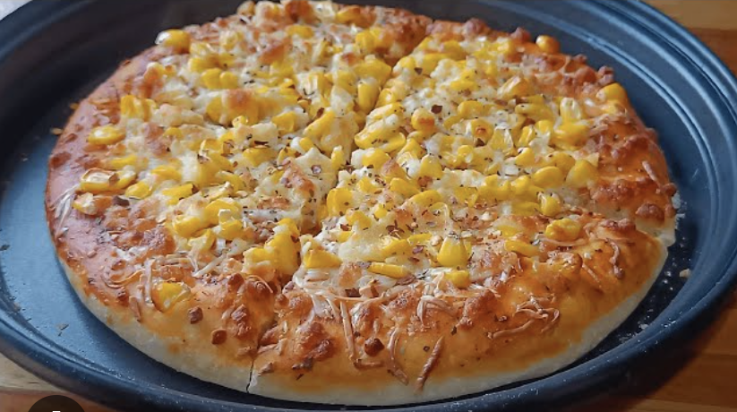

Recipe For Corn Pizza

Description About Corn Pizza
Corn pizza is a delicious variation of traditional pizza that features sweet and juicy corn kernels as a topping. The natural sweetness of the corn complements the rich flavors of melted cheese, tangy tomato sauce, and a crispy or soft pizza crust.
Materials Required for Corn Pizza:
- Pizza base
- Sweet corn kernels
- Pizza sauce
- Mozzarella cheese
- Bell peppers (optional, sliced)
- Onions
- Oregano
- Chili flakes
- Butter or olive oil
- Black pepper
- Mayonnaise or white sauce (optional)
Steps to Make Corn Pizza:
- Preheat the Oven – Set your oven to 200°C (392°F) and let it preheat for 10 minutes.
- Prepare the Pizza Base – Place the pizza base on a baking tray or pizza stone. Lightly brush it with butter or olive oil for extra crispiness.
- Spread the Sauce – Evenly spread a generous layer of pizza sauce over the base.
- Add Cheese – Sprinkle grated mozzarella cheese to cover the base.
- Add Toppings – Spread boiled sweet corn evenly. You can also add bell peppers, onions, or other veggies if desired.
- Season It – Sprinkle oregano, chili flakes, and black pepper for extra flavor.
- Bake the Pizza – Place it in the preheated oven and bake for 10-12 minutes or until the cheese melts and turns golden brown.
- Serve & Enjoy – Remove the pizza, let it cool slightly, slice it, and serve hot with ketchup or a dip!
home